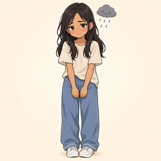

Advanced English (C1) · Instructor Kit
Module 4
Lexical Range & Fluency
Choose the verb. Choose the partner. Choose the voice.
Classes C10–C12 · the map
From the right word to the right voice
- 4.1 Phrasal & multi-word verbs: Turn it off. · We'll look into it. / We will investigate the matter.
- 4.2 Collocation, idiom & connotation: heavy rain · deeply concerned · slender, not skinny
- 4.3 Review project, The Advanced Communicator: present · take questions · write it up
NOTE Your real life, a new identity card, or something invented: all are OK. Describe invented people, never classmates.
4.1 · Four types · test it with "it"
Where does the object go?
| Type | Rule | Example |
|---|
| ① intransitive | no object | The car broke down. · We set off at dawn. |
| ② separable | noun: either place · pronoun: middle | turn off the light · turn it off |
| ③ inseparable | object always after | look after the kids · look after them |
| ④ three-part | never split | put up with the noise · put up with it |
"She looked after the cat." Did she look behind it? (No, she took care of it.) "Looked the cat after"? (No: inseparable.)
4.1 · The pronoun rule · check the meaning
Turn it off. Look after it.
| ✅ | ❌ |
|---|
| Turn it off. | Turn off it. |
| Pick her up at six. | Pick up her at six. |
| Deal with it. | Deal it with. |
| Put up with them. | Put them up with. |
"Fill in the form" or "fill the form in"? (Both.)
With "it"? (Only "fill it in.")
A long object? (At the end: "She turned off every light in the house.")
SAY IT turn it OFF /tɜrnɪˈtɔf/ · LOOK after them · put it off /pʊɾɪˈɔf/
4.1 · One verb, many jobs · polysemy
What took off?

The plane took off.

She took off her coat.

We set off at six.

The car broke down.
"Sales took off after the launch." Did anything leave the ground? (No: they grew fast.) · "He picked up Portuguese." A class? (No, informally.) · Nouns: break DOWN → a BREAKdown · turn OUT → an OUTcome
4.1 · The register swap · a C1 key point
Spoken ⇄ written
| Spoken | Written |
|---|
| put off | postpone |
| find out | discover |
| look into | investigate |
| put up with | tolerate |
| get rid of | eliminate |
| come across | encounter |
Text to a roommate: look into or investigate the leak? (look into.)
Email to the property manager? (investigate.)
"I shall relinquish caffeine" at lunch? (No! "I'm giving up coffee.")
DON'T OVER-CORRECT carry out · point out · set up are fine in formal writing
4.1 · Model · same facts, two voices
The launch
Leah: So how did the launch go? I heard it nearly fell through.
Omar: Two suppliers pulled out at the last minute, so we had to put it off by a week and set up new contracts from scratch.
Leah: Did you ever find out why?
Omar: We looked into it. A competitor had taken them over.
Written: Two suppliers withdrew at short notice, obliging us to postpone the launch by a week and establish new contracts. On investigating, we discovered that a competitor had acquired them.
4.1 · Freer task · 15 min
🔁 The Register Swap
- A tells the voice note from memory · B notes every phrasal verb
- Together: a 70–90-word formal update · keep one phrasal verb on purpose (K) · no idioms
- B turns the formal memo into a 30-second spoken update
- Swap drafts: Praise – Question – Polish
Read the card aloud? (No, tell it.)
How many words? (70 to 90.)
Change every phrasal verb? (No, keep one, mark it K.)
B's update: formal or spoken? (Spoken.)
4.2 · Which sounds English?
Words that travel together

powerful strong coffee

strong heavy rain

bitterly cold

make take a photo
"There was strong rain." Can you understand it? (Yes.) Is it English? (Not quite: heavy rain.) Is there a rule? (No, it's convention: learn the pair.)
4.2 · Collocation types · weak → strong
Precise, not just correct
| Type | Strong collocation |
|---|
| adj + noun | a bitter disappointment |
| verb + noun | meet a deadline |
| adv + adj | highly unlikely |
| verb + adv | apologize profusely |
| noun + noun | a round of applause |

very worried deeply concerned

a big a bitter disappointment
"bitterly…" Can you guess the next word? (cold / disappointed: a strong collocation.) "very cold": wrong? (No, just weak.)
4.2 · Connotation clines · check the meaning
Praising or criticizing?
| 🙂 positive | 😐 neutral | 🙁 negative |
|---|
| slender · slim | thin | skinny · scrawny |
| thrifty · frugal | economical | stingy · tight |
| self-assured | confident | arrogant · cocky |
| renowned | well-known | notorious |
| curious | interested | nosy |
"She's slender." / "She's skinny." Same body? (Yes.) Same message? (No.) · "a childlike sense of wonder" vs "Stop being childish." (+ / −)
CARE invented people, objects and animals only · never classmates
4.2 · Idioms · appropriacy
A pinch, not a plateful
- Spoken: rephrase in formal writing · the tip of the iceberg → only a small fraction of the problem
- Sparingly: one or two per talk
- Exact form:
hit the nail on its head · a blessing in the disguise

get cold feet
"Use it or lose it." Is it true of vocabulary? Of idioms? Which three chunks will you use this week, and where?
4.2 · Freer task · 12 min
🎯 The Precise Talk
- Plan (3 min): 6 collocations, 1–2 idioms only if they fit
- Talk: 90 seconds · listeners tick chunk bingo
- Shades: explain one near-synonym set for your topic
- Praise – Question – Polish, one line each
How long? (90 seconds.)
How many idioms? (One or two, only if they fit.)
Bingo: a competition? (No, feedback.)
Describe a classmate as "skinny"? (No!)
4.3 · The register spectrum · shift as a set
One message, three costumes
| Formal | The initiative will commence next quarter and is anticipated to yield significant benefits. |
|---|
| Neutral | The project starts next quarter and should bring real benefits. |
|---|
| Informal | We're kicking this off next quarter, and it should pay off nicely. |
|---|
"The committee will sort out the discrepancies." What's wrong? (A register clash.) Two fixes? (…resolve the discrepancies / The committee's going to sort out the mess.)
4.3 · Rhetoric & signposts · at the hinges
Better architecture, not louder
| Device | Example |
|---|
| rhetorical question | Can we really afford to wait? |
| rule of three | cheaper, cleaner, and already here |
| contrast | not a lack of money, but a lack of will |
| cleft / inversion | What we need is… · Never has… |
- I'd like to make the case that…
- There are three points I want to raise.
- This brings me to… · Turning now to…
- In essence,… · The bottom line is this:…
4.3 · Model · one point, two voices
The deadline should move
Client: Having reviewed the current timeline, I would respectfully suggest that a modest extension may well prove prudent.
Colleague: Look, between us, there's no way we're hitting Friday without cutting corners. Let's just push it back a week, OK?
Find five features that shift together: would respectfully suggest ↔ Look, between us · may well prove ↔ there's no way · a modest extension ↔ push it back · full forms ↔ contractions · no idiom ↔ cutting corners
4.3 · The Advanced Communicator · 20 + 15 min
🎤 Present · take questions · write it up
- Talk: up to 3 minutes, signposted, one or two devices
- Q&A: 2 minutes · concede, then counter
- Listeners: note the main claim + the best challenge
- Summary: ~150 words, formal, for a committee · include the objection · no idioms
Read your notes? (A quick look only.)
How do you answer a challenge? (Concede, then counter.)
Idioms in the summary? (No.)
Present only to the teacher? (Yes, if you prefer.)
Halfway through C1
Module 4 done 🎉
- 🔁 We'll look into it. / We will investigate the matter. · Turn it off.
- 🎯 heavy traffic · deeply concerned · slender, not skinny · thrifty, not stingy
- 🎤 One argument, three voices: the talk, the Q&A, the formal summary
Homework: online lessons 4.1–4.3 with 🔊. Next: C13, Progress Test 1 (Modules 1–4) + catch-up.